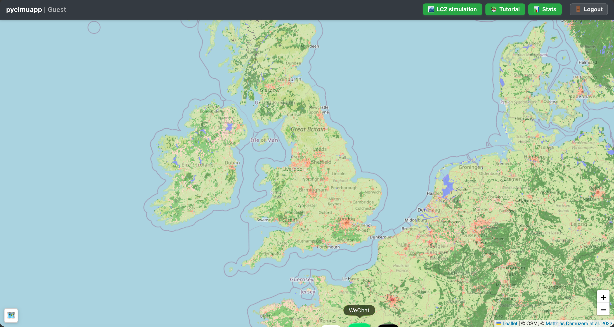

Recommended usage
1 Download input data: data
2 Decompression
pwd
tar -zxvf surface.tar.gz
3 Pull
docker pull junjieyu/clmuweb:laest
4 Run
# surface is the data dir of step 1&2
docker run \
-p 8080:8080 \
-v "$(pwd)/surface:/app/surface" \
--name clmuweb-container \
junjieyu/clmuweb:latest
# then open http://localhost:8080/ or http://localhost:8080/.
successful Web interface will look like:

5 Stop and Remove
docker stop clmuweb-container
docker rm clmuweb-container